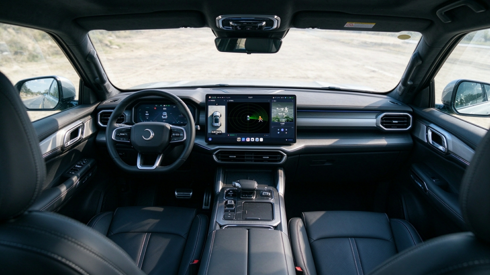

枫云AI助手社区版
高自由度网页 / 桌面二次元 2D/3D 全能 AI 助手。多设备通过浏览器使用，支持主动感知对话、多模态视觉、Live2D 桌宠与通用电脑自主操控。
开源全域多场景迷你 AI 座舱平台。一台小车，一套完整的座舱系统，可以被拆开、被理解、被重新定义。11 月下旬首曝，12 月中旬正式发布。

除了走向实体的弦月小车，枫云 AI 助手依然是我们最核心的软件产品。从 Windows 桌面到 Linux 极客硬件，开源免费、本地优先、多端访问。
配套视频教程覆盖使用与开发两条路径，让每一个想法都能被真正实现。
版本更新、教程发布与项目公告都会在这里同步。关注 GitHub，获取最新进展。
关于开源、运行与参与的常见问题。仍有疑问？欢迎在 GitHub 或 B 站与我们交流。
从弦月小车到枫云 AI 助手，所有项目开源免费。欢迎 Star、试用、反馈，或加入社区，一起把热爱变成真正好用的产品。